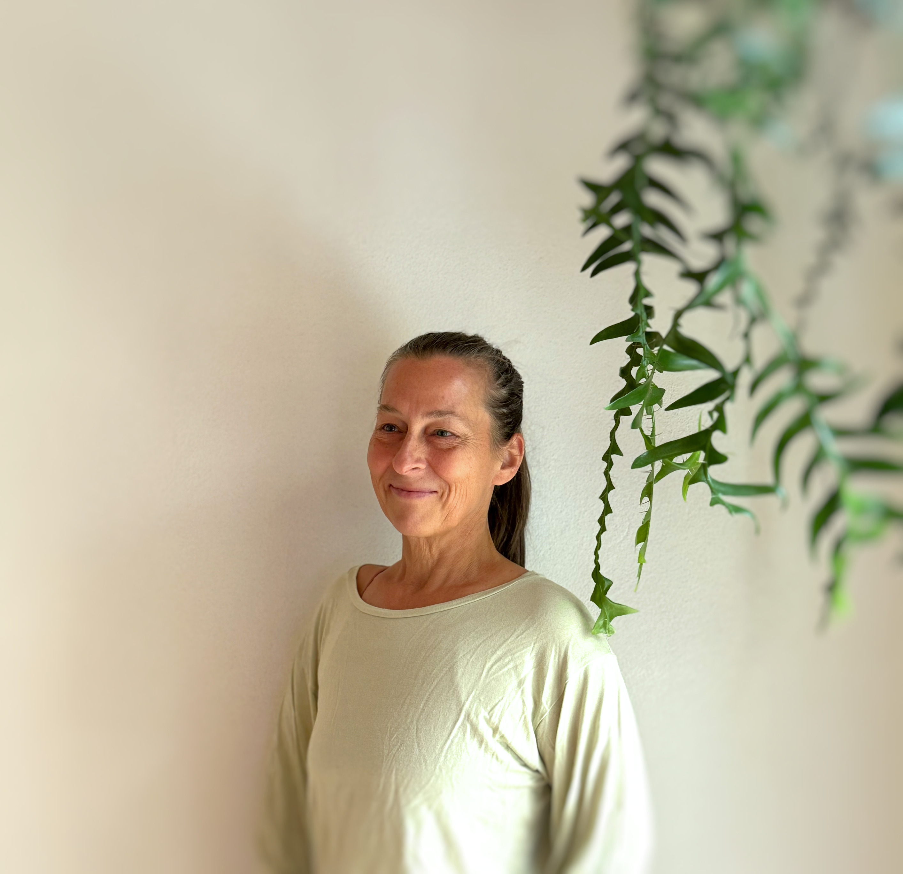

1:1
ECHO® Session
Präzise Arbeit am Ursprung deines Themas. Online oder in Wien/Langenzersdorf.
Zur SessionIch begleite Frauen dabei, alte Muster aus der Ahnengeschichte, dem eigenen Leben und dem Körper zu lösen — damit das, was wirklich du ist, endlich Raum bekommt.

Ich arbeite an der Schnittstelle von Wissenschaft und alter Weisheit. Mit der ECHO® Methode, Yoga und Klangreisen begleite ich Menschen dabei, das zu lösen, was sie unbewusst tragen — aus dem eigenen Leben, aus der Familiengeschichte, aus der Ahnenreihe.
Meine Arbeit ist präzise, sanft und tief. Sie ist für Frauen, die schon viel an sich gearbeitet haben — und trotzdem das Gefühl nicht loswerden, dass da noch etwas ist.
Kennst du das Gefühl, immer wieder am selben Punkt zu landen — obwohl du so viel schon bewegt hast? ECHO® verbindet aktuelle Forschung aus der Epigenetik mit altem europäischen Heilwissen.
Nicht an den Symptomen. An der Wurzel.
Epigenetik, Traumaforschung und innere Anteilsarbeit — spirituell verwurzelt
Kindheit · Ahnenlinie · Kollektiv · persönliche Geschichte
Präzise und transformierend — ohne jahrelange Prozesse
Präzise Arbeit am Ursprung deines Themas. Online oder in Wien/Langenzersdorf.
Zur Session
Sich dem Klang überlassen. Loslassen, was Worte nicht erreichen.
Zu den KlangreisenIch hatte keine Erwartungen — und wurde trotzdem überrascht. Etwas hat sich gelöst, das ich jahrelang mit mir getragen habe. Leise, aber spürbar.
Die Session war anders als alles, was ich bisher kannte. Kein langes Reden, kein Kreisen. Direkt, klar — und irgendwie auch sehr sanft.
Die Klangreise hat mir etwas gegeben, wofür ich keine Worte habe. Ich bin anders nach Hause gegangen als ich gekommen bin.
Über Ahnenarbeit, weibliche Heilung, den Körper als Heimat.
Ahnenarbeit wird oft missverstanden. Was sie wirklich ist — und was sie bewirkt.
WeiterlesenDie Wissenschaft hinter dem, was Generationen weitergeben — und was das für uns bedeutet.
WeiterlesenDas Muster, das bleibt. Was dahintersteckt — und was es bedeutet.
WeiterlesenWenn du spürst, dass da etwas ist — dann lass uns sprechen. Ein kurzes Kennenlernen, ohne Verpflichtung.
Wien / Langenzersdorf · und online